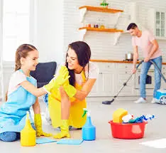
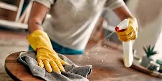
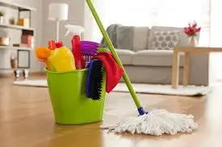

Hogar🛠️
Como los niños puedan ayudar en el Hogar.
consejos de jardinería para principiantes,jardinería en casa,ideas para el jardín, cómo empezar un huerto urbano,guía de jardinería mes a mes,herramientas de jardinería esenciales
!¿Como padres tenemos mucho trabajo en casa, y a veces cometemos el error de no permitir la colaboración de los niños porque pensamos que no son capaces de hacer aún muchas cosas. Según el método Montessori, enfocado en lograr la autonomía en los niños, es importante dejarlos participar en diferentes tareas del hogar, por eso han desarrollado una lista de actividades para niños por edades que nos permite entender mejor, hasta donde pueden llegar los pequeños.¡
Tareas para nuestros hijos en el hogar:

NIÑOS DE 2 A 3 AÑOS: Ordenar sus juguetes Ayudar a recoger su ropa Tirar cosas a la basura Regar las plantas con supervisión Poner algunas cosas de la mesa con ayuda
NIÑOS DE 4 A 5 AÑOS: Dar de comer a una mascota Vestirse solo Recoger su habitación Lavar platos con ayuda Limpiar desastres Ordenar juguetes Poner la mesa
NIÑOS DE 6 A 7 AÑOS: Poner y quitar la mesa Pasar la aspiradora o sacudir Ordenar su escritorio Ordenar juguetes Preparar su maletín Doblar toallas y ropa sencilla Lavarse los dientes solos después de cada comida
NIÑOS DE 8 A 11 AÑOS: Ordenar su cuarto Cuidar una mascota Barrer Bañarse solo Pasear perros Preparar comidas sencillas con supervisión Cuidar sus pertenencias e higiene personal Despertarse solos con despertador
NIÑOS DE 12 AÑOS EN ADELANTE: Cambiar la ropa de cama solos Mantener su cuarto ordenado Barrera y trapear Cuidar niños más pequeños Preparar una comida familiar, con ayuda para comprar ingredientes Pintar paredes Hacer sus tareas y deberes solos
NIÑOS DE 8 A 11 AÑOS: Ordenar su cuarto Cuidar una mascota Barrer Bañarse solo Pasear perros Preparar comidas sencillas con supervisión Cuidar sus pertenencias e higiene personal Despertarse solos con despertador
Hogar y Jardín | Decoración, Bricolaje y Jardinería para tu EspacioJardinería y Plantas | Cuidados, Diseño de Jardines y Huerto UrbanoDecoración del Hogar | Ideas, Tendencia y DIY para Espacios ÚnicosBricolaje y Mejoras para el Hogar | Proyectos DIY y ManualidadesGuías Hogar y Jardín | Decoración, Mantenimiento y Cuidado de Plantas
Hora Actual
Cargando...
Cargando...
"🚨3 SUPER FIJOS"
 Pago Movil.
Banco Mercantil: 0105.
Telef: 04248671967.
C.I: 14055604.
Monto: 100Bs
Enviar su capture al 04248671967
Pago Movil.
Banco Mercantil: 0105.
Telef: 04248671967.
C.I: 14055604.
Monto: 100Bs
Enviar su capture al 04248671967

¡Selva Plus".!
"VER Informacion"
¡Loto Rey".!
"VER Informacion"
¡La Granjita".!
"VER Informacion"
!Ruleta Royal".!
"VER Informacion"
¡Granjazo Millonario".!
"VER Informacion"
¡Granja Millonaria".!
"VER Informacion"
!Loto Activo".!
"VER Informacion"Ideas, Tendencia

¡Guacharo Activo".!
"VER Informacion"Dr.Animalitos / 06 ene, 2025
❤️¿Aprende a limpiar tu casa en 6 pasos:
decoración de dormitorios tranquilos,ideas para un baño acogedor,decorar terraza pequeña, manualidades para el hogar fáciles,muebles de palés DIY,ideas de bricolaje para principiantes, cómo pintar muebles de madera,organizadores de pared DIY,renovar muebles viejos
Mantener la casa limpia es una tarea de nunca acabar que requiere no sólo esfuerzo constante, sino también de invertir una gran cantidad de tiempo todos los días. Por eso, la mayoría de las amas de casa soñamos con algún secreto que nos permita, mantener nuestro hogar reluciente, en el menor tiempo posible, con productos de limpieza de excelentes calidad que no cuesten más para darle lo mejor a nuestra familia.

En Tu Hogar queremos ayudarte a convertir este sueño en realidad...
Hogar y Jardín | Decoración, Bricolaje y Jardinería para tu EspacioJardinería y Plantas | Cuidados, Diseño de Jardines y Huerto UrbanoDecoración del Hogar | Ideas, Tendencia y DIY para Espacios ÚnicosBricolaje y Mejoras para el Hogar | Proyectos DIY y ManualidadesGuías Hogar y Jardín | Decoración, Mantenimiento y Cuidado de Plantas
Primero, saca el polvo y la arena del camino:
En este paso la clave es usar un trapo húmedo que nos ayude a atrapar las partículas de polvo y evitar que éstas queden suspendidas en el aire o vuelen de un lugar a otro dentro de la casa desplazando la suciedad a otros lados. Para esto te recomendamos humedecer el trapo con un chorro de Fabuloso Lavanda sin diluir, lo que te ayudará no solo a limpiar, sino también te servirá de desinfectante dejando en el ambiente un agradable aroma. Una perfecta idea para la limpieza de pisos.…
